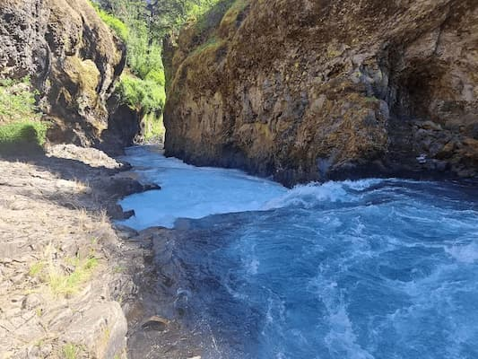
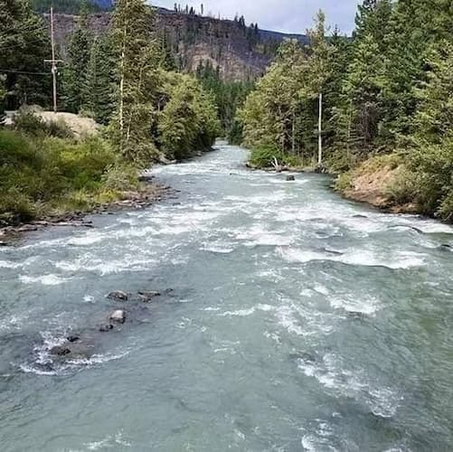
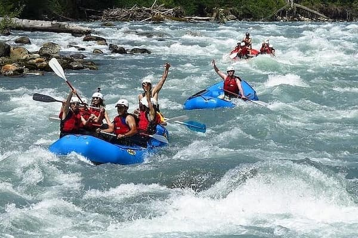
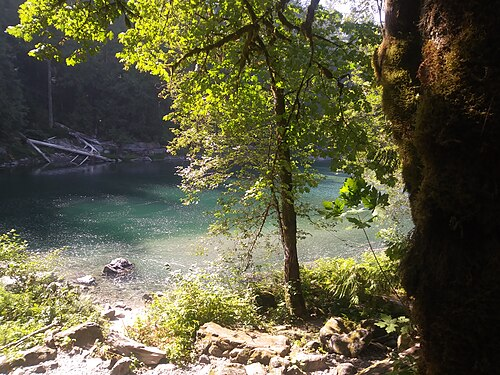
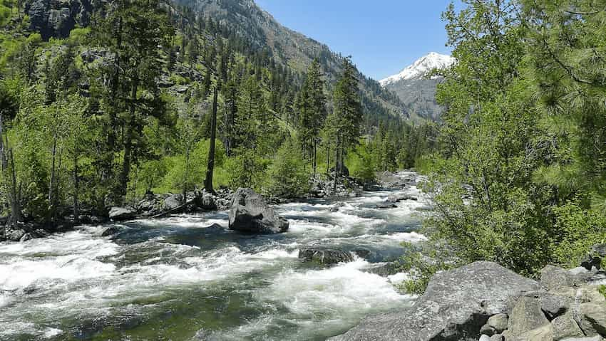

White Salmon trips

Difficulty: class 3-4 (exciting & Challenging)
ages:
10+
Our White Salmon river trip can be either a half day or a full day. Our half day trip
excludes numerous challenging class 3 & 4 rapids. Depending on water level both
trips
include base jumping. Half day is just the upper portion of the river, full day trip
includes lower half of the river and lunch. The full day trip includes a option run
to
12' tall falls (ages 16+ and depending on water level).
Tieton River Trip

Difficulty: class 3+ (exciting & Challenging) ages:
10+
When most rivers in Washington are too low for rafting, the Tieton River provides an
excellent season finale trip. The yearly release of water from the Rim Rock lake
each
September turns the Tieton River into a rollercoaster. With a steep gradient and
guaranteed water.
Upper Skagit River

Difficulty: class 2-3 (beginner) ages:
Minimum 50lbs
The upper section of the Skagit River is rated as Class 2 – 3 and is a great
introduction
to
whitewater for kids and adults. A moderate amount of whitewater is enhanced by the
overwhelming
presence of nature on this 10 mile rafting journey. The mountain scenery and
abundant
waterfowl make
this a perfect nature-lover’s outing and one that is a great trip for the whole
family.
There are
plenty of opportunities to go swimming and even a big rock to jump from if the water
levels are
right.
Skykomish River

Difficulty: class 3-5 (intermediate-Advanced) ages:
16+
Washington’s Best Whitewater Rafting is just 1 hour from Seattle on the Skykomish
River.
Rafting on
the Skykomish River, which cascades out of the lush rugged valleys of the Wild Sky
Wilderness, is an
epic way to start your rafting summer adventures. The Skykomish whitewater raft
season
runs daily
from April through July, with instructional and family friendly floats in the
shoulder
seasons.
Wenatchee River Rafting Trip

Difficulty: class 3 (exciting & Challenging) ages:
10+
The Wenatchee River is the most popular river rafting trip in the state of Washington
for
a few very
simple reasons: in the spring, when the river is high, the white water is awesome
and
the waves can
be towering. In the summer when the river mellows, the weather is hot, the rapids
are
still fun and
it can be traveled by inexperienced paddlers from 10 years on up.
| Trip Name |
Difficulty |
Age Limit |
Duration |
| White Salmon |
Class 3-4 |
10+ |
Half or full Day |
| Skagit River |
Class 2-3 |
Minimum 50lbs |
4 hours |
| Wenatchee River |
Class 3 |
10+ |
2 hours |
| Tieton River |
class 3+ |
10+ |
4 hours |
| Skykomish River |
Class 3-5 |
16+ |
4 hours |
Ready for an Adventure?
Spaces fill up fast, so book your trip soon. Contact us today to secure your spot on
the
river!
Book Your Trip Today